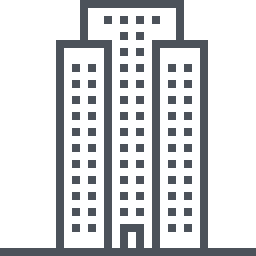

<style>
    :root {
      --azul-trisul: #002F6C;
      --amarelo-cta: #FFD700;
      --branco: #FFFFFF;
      --sombra: 0 4px 20px rgba(0, 0, 0, 0.1);
    }
    
    /* Container Principal */
    .terreno-torre-container {
      width: 100%;
      max-width: 1200px;
      margin: 2rem auto;
      padding: 2rem;
      display: grid;
      grid-template-columns: repeat(auto-fit, minmax(300px, 1fr));
      gap: 2rem;
      background: var(--azul-trisul);
      border-radius: 15px;
      box-shadow: var(--sombra);
      text-align: center;
      /* Para tamanhos médios e menores, manter o auto-fit */
      justify-items: center;
    }
    
    /* Blocos de Torre e Terreno */
    .terreno-torre-item {
      background: rgba(255, 255, 255, 0.1);
      border-radius: 15px;
      padding: 1.5rem;
      display: flex;
      flex-direction: column;
      justify-content: center;
      align-items: center;
      min-height: 250px;
    }
    
    /* Cabeçalho de cada bloco: ícone + título */
    .terreno-torre-header {
      display: flex;
      align-items: center;
      justify-content: center;
      gap: 1rem;
      margin-bottom: 1rem;
    }
    
    .terreno-torre-header img {
      width: 50px;
      height: auto;
      filter: brightness(100);
    }
    
    .terreno-torre-header h3 {
      font-size: 2rem;
      color: var(--amarelo-cta);
      margin: 0;
    }
    
    .terreno-torre-item p {
      font-size: 1.2rem;
      line-height: 1.8;
      margin: 0;
      color: var(--branco);
    }
    
    /* Ajustes para dispositivos mobiles */
    @media (max-width: 768px) {
      .terreno-torre-container {
        padding: 1rem;
        gap: 1rem;
      }
      .terreno-torre-header h3 {
        font-size: 1.8rem;
      }
      .terreno-torre-item p {
        font-size: 1rem;
      }
      .terreno-endereco {
        font-size: 1.2rem;
        margin-top: 1.5rem;
      }
    }
    
    /* Para telas grandes, evita que os cards se estiquem: 
       mantém largura fixa e centralizados */
    @media (min-width: 1200px) {
      .terreno-torre-container {
        grid-template-columns: repeat(2, auto);
        justify-content: center;
      }
      .terreno-torre-item {
        width: 300px;  /* Largura fixa para cada card */
      }
    }
  </style>
  
  <section class="terreno-torre-container">
    <!-- Bloco da Torre -->
    <div class="terreno-torre-item">
      <div class="terreno-torre-header">
        
        <h3>1 Torre</h3>
      </div>
      <p>Com ampla área de lazer integrada, projetada para oferecer conforto e exclusividade.</p>
    </div>
    
    <!-- Bloco do Terreno -->
    <div class="terreno-torre-item">
      <div class="terreno-torre-header">
        
        <h3>Terreno de 3.140m²</h3>
      </div>
      <p>Espaço amplo e bem localizado na Vila Mariana, pensado para o seu bem-estar.</p>
    </div>
  </section>
  
  <script>
    console.log("Seção Terreno e Torre carregada.");
  </script>
  